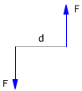
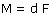

Momento del torque
Para que un cuerpo empiece a girar hay que someterle a un torque (Par de fuerzas): dos fuerzas iguales, opuestas aplicadas en puntos diferentes. Se define momento del torque:
 |
 La flecha curva indica el sentido de la rotación que produce |
Cálculo rápido del momento del torque
Se calcula el momento de cada fuerza respecto al eje de rotación.
Se halla la resultante de estos momentos